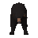
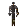
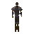
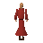
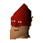
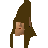
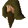
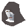

Battlefield
Location at 2522, 3232 · Kingdom of Kandarin
Open on the world map → Open in knowledge graph → Below: Battlefield (underground)
NPCs
| NPC | Level | Spawns | Notable drops |
|---|---|---|---|
| 49 | 6 | ||
| 48 | 2 | ||
| 24 | 6 | ||
| 24 | 1 | ||
 Bear | 19 | 1 | |
 Khazard trooper | 19 | 23 | |
 Khazard trooper | 19 | 16 | |
 Monk of Zamorak | 17 | 8 | |
| 13 | 1 | Fishing bait, Herb drop table, Coins, Iron arrow | |
| 12 | 5 | ||
| 12 | 1 | ||
| 4 | 2 | ||
| 4 | 2 | ||
| 4 | 1 | ||
| 3 | 2 | ||
| 3 | 1 | ||
| 3 | 1 | ||
| 1 | 30 | ||
| 1 | 17 | ||
| 1 | 13 | ||
| 1 | 10 | ||
| 1 | 9 | ||
| 1 | |||
| 1 | |||
| 1 | |||
 Commander Montai | 1 | ||
| 1 | |||
| 1 | |||
 Gnome | 1 | ||
 Kilron | 1 | ||
| 1 | |||
| 4 | |||
| 1 | |||
| 1 | |||
 Spirit of Scorpius | 1 |